Homework 6: Debugging
Lectures needed for this homework: None in particular.
Introduction
In HW4 (IntLists), we introduced the IntelliJ interactive debugger. In this homework, we will be gaining more practice with debugging. The goal for this assignment is to learn more about the following:
- Reading the stack trace and knowing how to isolate the bug from it.
- Understanding the different types of exceptions we might run into.
- Getting more comfortable using the IntelliJ debugger.
- Exception breakpoints, expressions and watches (optional).
As usual, don’t hesitate to look things up if you’re unsure what something means, particularly, what a specific exception or error means if it comes up in the stack trace (which we’ll be covering in this assignment). The hints are meant to guide your thinking, but we encourage you to try going through the assignment on your own first before opening the hints.
Setup
Follow the Assignment Workflow Guide to get started with this assignment. This starter code is in the hw06 folder.
The very first thing you should do is run the main method in AdventureGame to run through the game. Follow the instructions that are given once you run through the game. This will give you a sense of what the program you are debugging is supposed to do (if you run into an error, that’s normal).
Then, after you’ve run the game, run the tests in tests/adventure/AdventureGameTests. They should fail on BeeCountingStage which will lead you into debugging the first error below (note that all the tests will be failing at this point). To pass the entirety of AdventureGameTests, you’ll need to fix all the individual stage tests (fixing one stage will show that you passed that individual stage). The stages are meant to be completed in order of the spec.
We encourage you to run through the game for each stage you complete to see how they’re all related to the game. Don’t forget to commit frequently to save your progress!
Reading Stack Traces
When a runtime error occurs in Java, a stack trace is printed to the console to provide information on where the error occurred and what steps the program took to get there. When running Adventure for the first time, your stack trace will look something like this:
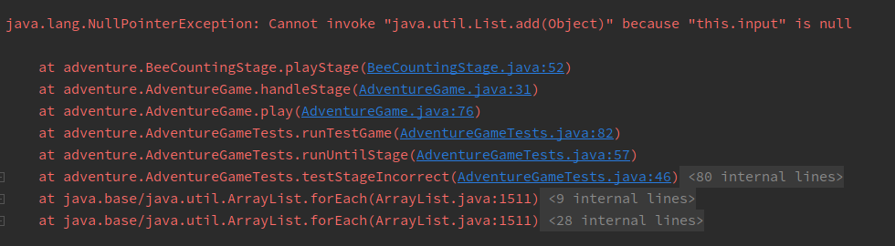
The first thing to note is what kind of error occurred; this is shown at the first line of the stack trace. In this case, our code threw a NullPointerException.
For some exceptions, including NullPointerExceptions, Java will give you an explanation. Here, this.input is null, so we can’t invoke (call) a method on it.
The lines beneath it represent the sequence of methods the program took to arrive at the error: the first line in the list is where the error occurred and the line beneath it represents the line of code that called the method which threw the error, and so on.
You can click on blue text to navigate to that file and line.
To get a sense of how you would interpret stack traces in, you would usually start from the top. As mentioned, the first line in the stack trace is where the error occurred - in other words, it is the last method call that took place before the error, so you can use that to isolate where the bug is. Depending on how the program is written, how it’s designed and what code you’ve written/contributed, you would navigate to the appropriate line in the stack trace and click on the blue text to go that line and start debugging.
For each of the following stages, only change what is necessary! You should not be rewriting entire blocks of code unless otherwise specified. We’ve included how many lines we changed as a guideline.
You can run through the adventure game each time if you’d like to
validate correctness, but you don’t need to - feel free to debug through the tests directly. For each file you’ll be working in, it contains a playStage method, and you can set a breakpoint in that method. From there, you can start debugging in AdventureGameTests.
Task 1: Bee Counting Stage
Fix the NullPointerException that occurs in BeeCountingStage by
analyzing the stack trace. You can ignore the lines with <XX internal lines>; these are from test framework or library code and usually won’t help you find errors.
Expected lines modified: 1
Hint 1 (click to expand)
Just because the error occurs on a certain line doesn’t necessarily mean that piece of code is incorrect - something not shown in the stack trace may be the elusive culprit!
Hint 2 (click to expand)
Take a close look at the constructor. Look at the variables that are declared and what is instantiated.
It turns out that this isn’t the only error in BeeCountingStage!
Fix the IndexOutOfBoundsError that occurs in BeeCountingStage.
Ignore the grey links to Objects.java and ArrayList.java at the
top of the stack trace. The error may have occurred in code that was not yours, but the root cause was probably something your code tried to do.
Expected lines modified: 1
Hint 1 (click to expand)
Don’t forget, Java is 0-indexed!
Task 2: Species List Stage
Fix the error(s) in SpeciesListStage. If you don’t see what the
issue is inside the method where the exception occurred (the top line of the stack trace), it’s often a good idea to look at the second line to see where the method is being called from, and with what arguments.
Expected lines modified: 3-4
Hint 1 (click to expand)
Consider the possibilities for lists. Does the code account for all of them? Are there any edge cases the code fails to handle?
It might also help to read the javadoc comments above the method to gain more context on what the method does.
You should not need to edit handleResponses.
Task 3: Palindrome Stage
Sometimes, IntelliJ will tell you something that it thinks is wrong. Hover over the yellow / orange highlights in the method with the bug (in the
digitsToIntListmethod inPalindromeStage- you can navigate to it through the stack trace). Does that give you any useful information?Use this feature to address the error in
PalindromeStage.
If the debugger feels unresponsive, it is usually due to an infinite loop somewhere in your code. If you set a breakpoint and it is never reached, then you know an infinite loop occurs before the breakpoint! Use this in combination with stepping to isolate the problem.
There are two bugs in this part that you’ll need to fix. Fix the most obvious one first and then try to isolate and solve the second one. The hint for this task applies to the second bug that needs to be resolved.
Expected lines modified: 3
Hint 1 (only applies to second bug) (click to expand)
If you haven’t already, read through the note above. Look at the method where digitsToIntList is called on. If you set a breakpoint in the method and run through the debugger, do we ever exit out the while loop? What is the condition we need to meet to break out of the while loop? Is it being met? Try using the Java Visualizer in conjunction so you can inspect the bug more closely with the visualizer.
Task 4: Machine Stage
The sumOfElementwiseMax method in MachineStage is supposed to take two arrays, compute the element-wise max of those two arrays, and then sum the resulting maxes. For example, for two arrays {2, 0, 10, 14} and {-5, 5, 20, 30}, the element-wise max is {2, 5, 20, 30}. In the second position, the larger of 0 and 5 is 5. The sum of this element-wise max is $2 + 5 + 20 + 30 = 57$.
There are two different bugs that make the method return an incorrect result. You can assume the input parsing code in playStage works correctly.
To find the bugs, you should not need to step into the mysteryMax or mysteryAdd functions, or even understand what they are doing. That is, you should use  to only see the result. These are mysterious functions that are deliberately obfuscated. If you find yourself having accidentally stepped into one of these two functions, use the
to only see the result. These are mysterious functions that are deliberately obfuscated. If you find yourself having accidentally stepped into one of these two functions, use the  button to escape.
button to escape.
Even without stepping INTO these functions, you should be able to tell whether they have a bug or not. That’s the glory of abstraction! Even if I don’t know how a fish works at a molecular level, there are some cases where I can clearly tell that a fish is dead.
Fix the two bugs so that sumOfElementwiseMax returns a correct
result. If you find a bug in mysteryMax or mysteryAdd, rewrite the faulty method entirely instead of trying to fix it. Don’t rewrite code unnecessarily, though – be sure that it’s broken first!
Expected lines modified: 2-5
Hint 1 (click to expand)
- Understand what the
sumOfElementwiseMaxfunction is supposed to do. When you give inputs to the game, try computing the answer by hand or with a calculator. Verify your computation against the output, and you’ll see that the output is incorrect. - Set a breakpoint on the line that calls
sumOfElementwiseMax. When you run the debugger, step intosumOfElementwiseMax, then use to see the result of the call to arrayMax. Is the output ofarrayMaxwhat you expect it to be? - You should step into
arrayMaxif you think that there’s a bug there. Don’t step intomysteryMax, though – if and only if you think it has a bug, rewrite it completely. - Repeat for
arraySumandmysteryAdd.
Optional: Exception Breakpoints
The rest of the assignment is optional. We’ll cover some additional tools that you can use in the IntelliJ debugger that you may find useful - exception breakpoints and expressions and watches.
Do not modify Puzzle.java!
These exercises will involve working with code that may seem quite cryptic and unfamiliar. Enforce the abstraction barriers and try to find the answers without having to understand exactly what is going on!
When debugging, you may sometimes run into an unexpected error, making it difficult to figure out what is wrong with your code. To help with this, IntelliJ allows you to set breakpoints on exceptions. These ensure that when your code throws an exception, the debugger will pause execution and allow you to inspect the state of your program.
Go ahead and run the Puzzle class. You should see the following output:
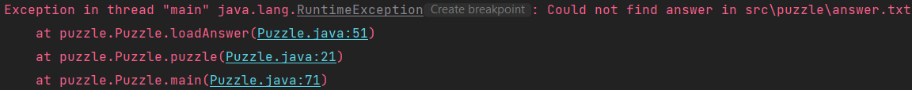
For many common exceptions, IntelliJ will indicate a “Create breakpoint” button in the console output (just to the right of java.lang.RuntimeException in the above screenshot), which will allow you to access the advanced breakpoint window. To access it without this button, create a breakpoint on any line (in the following screenshot, we’ve created a breakpoint on line 23), right-click it, and select “More”.
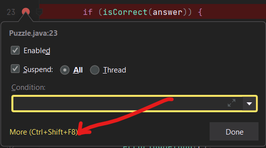
The advanced breakpoint window should look something like this:
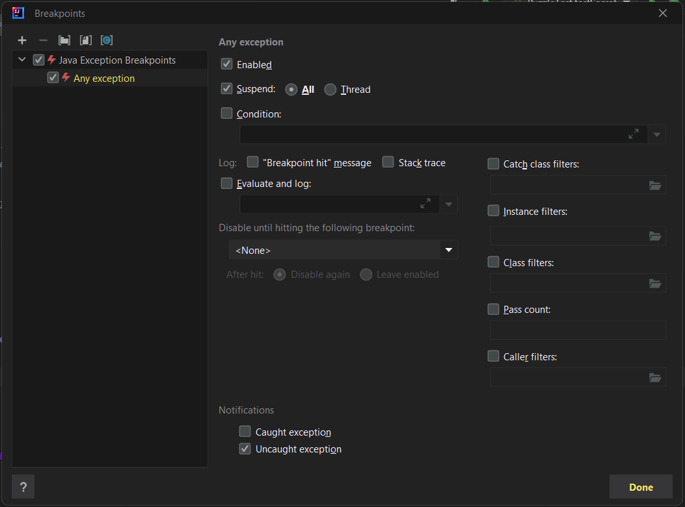
There’s a lot going on here, but you don’t need to understand most of it. Click the plus symbol in the top-left corner, and you should see a popup like this:
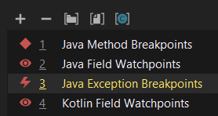
Select “Java Exception Breakpoints”, and another window will appear where you can specify the type of exception for which we want to pause execution. The console told us that we were getting a java.lang.RuntimeException, so go ahead and select that.
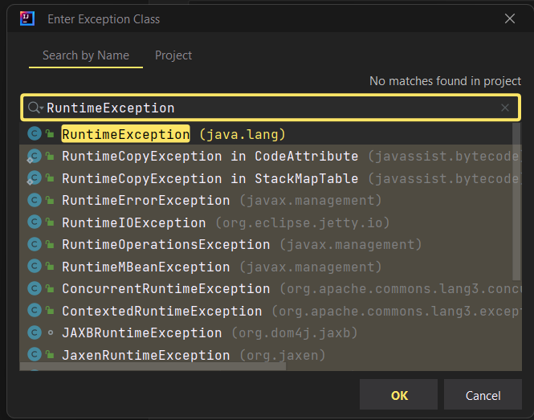
You should now see the original advanced breakpoint window, with a newly created exception breakpoint aptly named ‘java.lang.RuntimeException’ (if you used the console’s “Create breakpoint” button to access the window, you may see two copies of this, and that’s okay).
You will have the option to break on caught or uncaught exceptions, or both. This can be useful because a lot of library code intentionally throws and catches a lot of exceptions, so this allows us to focus on the unhandled ones if necessary. For now, go ahead and leave both options checked.
If you debug the program at this point, your code should pause on line 53, with a little lightning bolt symbol in place of the usual red circle. This indicates that the breakpoint was triggered by an exception, rather than a normal breakpoint.
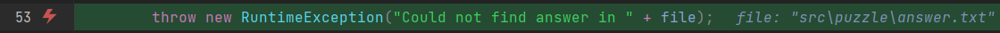
From this, we can see that IntelliJ is hinting that the problem may be in src/puzzle/answer.txt. By inspecting that file, poking around Puzzle.java, and using other debugging techniques you learned, can you figure out what’s going on?
Fix answer.txt so that Puzzle no longer throws a RuntimeException. Feel free to look at the hint if you’re stuck!
Hint
The issue is that Puzzle.java parses answer.txt for an integer guess, and doesn’t find any, so it throws an exception. To fix this, replace the TODO line of answer.txt with any integer.
After fixing the bug, run Puzzle again. You should now see the following output:
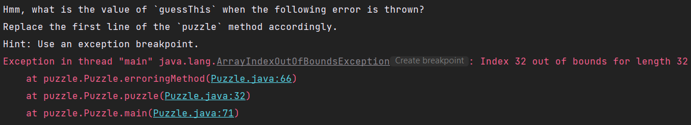
Read the error message and see if you can find the answer! If you’ve got it correct, Puzzle.java will no longer error and you should pass testPuzzle inside of tests/puzzle/PuzzleTest.
Replace the value in answer.txt so that Puzzle no longer errors.
Expressions and Watches
When debugging, you may not always have the value that you want to inspect stored in a variable. Luckily, IntelliJ has a solution for us! Once paused on a certain line, you can use the “Evaluate Expression” tool (shaped like a calculator). You can click on the calculator icon to open up a whole new window, but you can also just type the expression into the debugger directly:
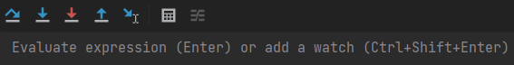
You can use variables and method calls with this tool too! Even though we’ve only used Math library methods in the following example, you can call anything you want. Here, we are using the tool in Puzzle.java with an initial answer guess of 973:
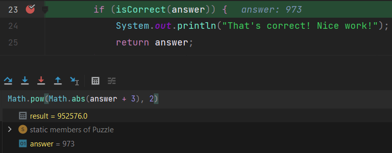
After you resume the program, result will be lost. If you don’t want to lose it, you can use Ctrl+Shift+Enter (Windows) or Cmd+Shift+Enter (Mac) to add it as a watch. This will keep it around even after you continue execution. Moreover, watches will change value accordingly with the program, just like normal variables would!
Watches will persist even after you stop and rerun your program, so they can be very useful for debugging over multiple executions. As an example, I’ve changed my guess from before to be 1717 and reran the program entirely, but didn’t have to re-evaluate the expression for the debugger to tell me what it was!
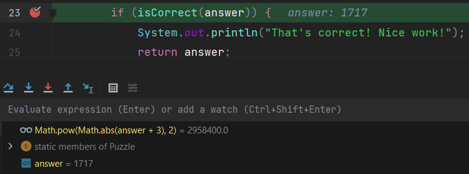
There won’t be an associated exercise with this part, but we think it would be a useful thing to know about!
Submission
Congratulations, you’ve made it to the end of the assignment!
If you pass all the local tests for Adventure, you will receive full credit on the assignment (unless you modified things you weren’t supposed to modify).
The style checker is turned off for this assignment’s autograder, so don’t worry about checking style for this homework.
Follow the Assignment Workflow Guide to submit. You can submit as many times as you want. The score you see on Gradescope is your final score for this homework.